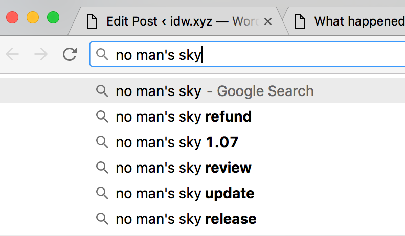

Like a lot of people I had been looking forward to No Man's Sky for some time. However I didn't preorder it, and when it was announced that it would not be a multiplayer game I decided it wasn't for me.
During the week of launch a friend of mine bought it. Having seen the opening of the game and then reading some articles online my wife thought it sounded like something she'd enjoy, something akin to minecraft in space. So I bought it for her as an anniversary gift ('cos I'm romantic like that) and she's been playing it on and off for the last week.
Now I will stress that besides a quick ten minute stint of a bit of mining and a bit of flying I have not played the game. I have however been excitedly following the progress of the game since E3 2015 and I've also seen my wife playing the game (a lot) for the past week. As far as I can tell the game whose progress I had been following and the game that she's playing seem to only share graphics.
While the procedurally generated planets do have some variety, it seems the variety is largely in the things you don't need to interact with. The main resources that you are required to mine seem to take on a fairly similar, if not exactly the same, appearance on all the worlds she's visited. The fauna and flora beyond that all seem to only yield carbon and there seems to be no reason to interact with any of it, other than the financial reward for discovering new species.
The planets, at least the ones I've seen her play through seem quite sparse and very repetitive. Every building that she's come across appears to be exactly the same as the last. Sometimes it has one of aliens in it with the choose your own adventure question, sometimes it's a computer asking you to figure out the next number in a sequence and sometimes they're devoid of life. The buildings themselves though seem to be exactly the same on every planet, in every galaxy that she's visited.
One of the standout features was the ability to seamlessly leave a planet and travel through space and that works as previously demoed, but it seems vastly watered down from the experience I had been looking forward to. So far I've not seen a single space battle, and whilst there are other ships out there you don't seem to be able to interact with them. The huge space stations are all identical and consist of just two rooms and a hangar with one alien at a desk and some other random aliens flying in and out. The sum total of interaction with other characters seems to consist of picking the right answer, buying resources, selling resources or buying their ship.
It just feels so unfinished. Part of me wondered in a game world universe so large perhaps she just hasn't come across any of these events yet. So I read some reviews online to see what other people thought.
With an average score of just 65% – ignoring Eurogamer, who also published a video called "Where did No Man's Sky go wrong?" despite recommending it – it seems I'm not alone in my criticism. The core mechanic of the game is mining resources to power and upgrade your suit, mining tool and ship. As a passive viewer it feels that the game's unfathomably huge, open universe becomes merely a backdrop to a fundamentally tedious activity. One that ultimately has no reward except to make the tedious activity a bit quicker.
Once you start earning upgrades for your equipment, tasks like mining start feeling less like a tedious chore. There's no worse modern game design convention than "this task sucks until you upgrade to make it suck less", and that's a convention No Man's Sky is oddly invested in, sadly. — Alex Navarro (Giant Bomb)
It really feels like Hello Games invested all of their energies and innovation into building a vast game world and somewhere along the line forgot to actually add the game to it. I'm left feeling quite conflicted; part of me appreciates the enormity of what they have achieved. Creating this huge open-universe game where you can transition between the planet you're on and the planet or moon that you're looking up at without a loading screen is genuinely impressive.
However they must know that this is not the game that they had previously demoed. They must know that some people will have preordered it and will now be massively disappointed with what they have received. I hope that with the influx of cash they have surely received since launch that they can continue to patch the game. That they can add the factions, the meaningfully different ships, the space battles, maybe even some missions and I hope that one day they can make a multiplayer version of the game that they demoed, because after all that is the game that people were excited about.
